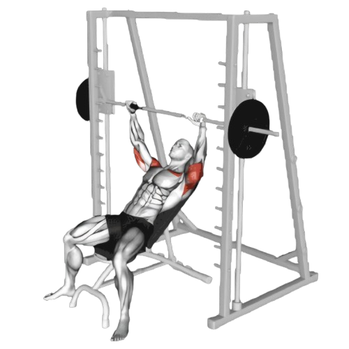
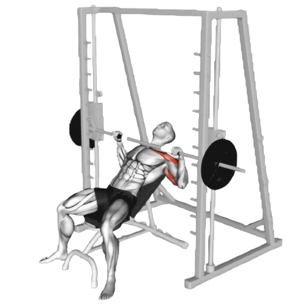

스미스머신

- 인클라인 벤치를 약 30도에서 45도 정도로 기울여 스미스머신 아래에 배치한다.
- 바를 가슴 윗부분 위에 위치시키고, 손을 어깨 너비보다 약간 넓게 벌려서 잡는다.
- 바를 가슴 위쪽으로 내리기 전에, 손목을 비틀어 잠금 장치를 풀어 바를 자유롭게 움직일 수 있도록 한다.
- 바를 밀어 팔을 핀다.
- 이때 호흡은 뱉는다.
- 천천히 바를 가슴 윗부분으로 내린다. 팔꿈치를 몸통 옆으로 자연스럽게 내리며, 바가 가슴 상부에 닿도록 한다.
- 바가 가슴에 살짝 닿으면, 숨을 내쉬면서 팔을 밀어 올려 시작 위치로 돌아온다.
- 이때 호흡은 마신다.

주의사항
- 스미스머신이 안정된 궤도를 제공하지만, 어깨와 손목의 위치를 잘 조절하여 부상을 방지해야 한다. 손목이 꺾이지 않도록 바를 손바닥 중심에 위치시킨다.
- 지나치게 무거운 중량은 잘못된 자세를 유발할 수 있어 부상의 원인이 된다.
운동부위 및 효과
- 상부 대흉근, 삼두근, 삼각근 전면부, 코어근육
- 인클라인 각도 덕분에 가슴 상부 근육에 더 많은 자극을 주어, 가슴 윗부분을 두껍고 탄탄하게 만든다.